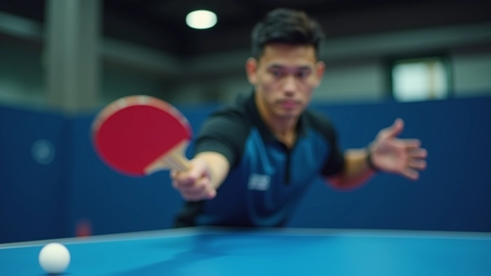
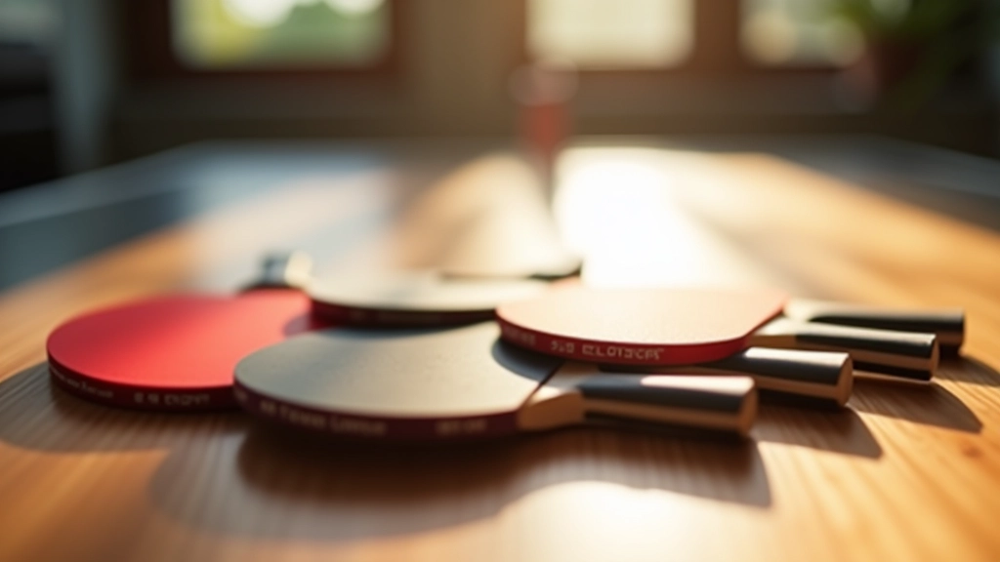

اختيار السطح المناسب حسب أسلوب لعبك
تعرف على كيفية اختيار السطح المناسب بناءً على أسلوب لعبك سواء كنت لاعب هجوم أم دفاع...
شرح مفصّل لكيفية تأثير خصائص السطح على أسلوب لعبك والتحكم في الكرة

اختيار السطح المناسب ليس خيار ثانوي — إنه قرار حاسم يشكّل كل جزء من لعبتك. السرعة والدوران والتحكم، كل هذا يبدأ من السطح الذي تختاره. سواء كنت تفضل الهجوم السريع أو الدفاع الصبور، فإن فهم الفرق بين الأسطح السريعة والبطيئة سيغيّر طريقة اختيارك للمعدات.
في هذا الدليل، نشرح بالتفصيل كيف يعمل كل نوع من الأسطح، ومتى تستخدم كل منها. لن تجد مصطلحات معقدة — فقط شرح واضح يساعدك على اتخاذ القرار الصحيح.
تنقل الكرة بسرعة عالية مع دوران أقل. مثالية للاعبين الهجوميين الذين يريدون السيطرة السريعة.
توفر تحكم أفضل ودوران أكثر. تناسب اللاعبين الدفاعيين والمبتدئين الذين يريدون الاستقرار.
السطح السريع يتميز بملمس ناعم وكثافة عالية. عندما تضرب الكرة بقوة، ترجع بسرعة أكبر دون امتصاص كبير للطاقة. هذا يعني أن اللاعب يحتاج لقوة أقل لتحقيق سرعة عالية.
اللاعب المشهور تيمو بول يستخدم أسطح سريعة لأنها تتناسب مع أسلوبه الهجومي المباشر. يريد الكرة تصل بسرعة بدون تأخير.

السطح البطيء يتميز بملمس حبيبي وملمس مسامي. يمتص طاقة أكثر من الكرة، مما يعني أن الكرة ترجع ببطء أكثر. هذا يعطيك وقتاً أكثر للتحضير للضربة التالية والتحكم بدقة أكبر.
ماه لونج، أسطورة الدفاع الصيني، كان يستخدم أسطح بطيئة جداً. كان يريد أن يشعر بالكرة بالكامل ويضع دوران خادع على كل ضربة.
اختيارك يعتمد على ثلاثة عوامل رئيسية: أسلوب لعبك، مستوى مهارتك، وأهدافك. لا يوجد خيار "صحيح" واحد — كل واحد مناسب لحالة معينة.
هل تحب الهجوم المباشر أم تفضل الانتظار والدفاع؟ اللاعبون الهجوميون يستفيدون من السرعة، بينما يحتاج الدفاعيون التحكم والدوران.
إذا كنت مبتدئاً، ابدأ ببطيء. السطح البطيء يعطيك وقتاً أكثر وتحكماً أفضل. بعد 6-12 شهراً من التدريب المنتظم، يمكنك تجربة أسطح أسرع.
إذا أمكنك، جرب مضرب صديقك قبل شراء واحد. حتى 10 دقائق من اللعب ستخبرك الكثير عن الشعور الذي تريده.

إذا اعتدت على السطح البطيء وتريد الانتقال للسريع، تذكر أن تقلل قوتك قليلاً. الكرة ستذهب بعيداً دون ضرب قوي. جرب في المباريات الودية أولاً قبل المباريات الرسمية.
الانتقال معاكس — ستحتاج لضرب أقوى قليلاً للحصول على نفس السرعة. الفائدة أنك ستشعر بالكرة أكثر وتحصل على دوران أفضل. استغرق 2-3 أسابيع للتكيف.
بعض اللاعبين يستخدمون أسطح متوسطة السرعة — توازن بين السرعة والدوران. هذا خيار جيد للاعبين المتعددي المواهب الذين يريدون قليلاً من كل شيء.
الفرق بين الأسطح السريعة والبطيئة أساسي في تنس الطاولة. السطح السريع يعطيك سرعة عالية لكن يتطلب تحكماً أفضل. السطح البطيء يعطيك تحكماً ودوراناً لكن بسرعة أقل. لا أحد أفضل من الآخر — اختيارك يعتمد على من أنت كلاعب.
ابدأ بما يناسب مستوى مهارتك الحالي. إذا كنت مبتدئاً، اختر بطيء. إذا كنت متقدماً وتحب الهجوم، جرب السريع. الأهم أن تختار شيئاً تشعر معه بالراحة والثقة.
هل تريد معرفة المزيد عن اختيار المضرب المناسب؟
اقرأ دليل المبتدئين لاختيار أول مضربهذا المقال مقدم بأغراض تعليمية ومعلوماتية فقط. الآراء والتوصيات المذكورة تعتمد على خبرة تحريرية عامة وليست توصيات شخصية محددة. اختيار المعدات يختلف من لاعب لآخر حسب الظروف الفردية والتفضيلات الشخصية. ننصحك باستشارة مدربك أو متخصصين في متاجر متخصصة قبل اتخاذ قرار شرائي نهائي.
تعرف على كيفية اختيار السطح المناسب بناءً على أسلوب لعبك سواء كنت لاعب هجوم أم دفاع...

نصائح عملية لاختيار مضرب جيد للبدء دون إنفاق الكثير من المال...

تعرف على كيفية اختيار المحترفين لمعداتهم والمعايير التي يركزون عليها...